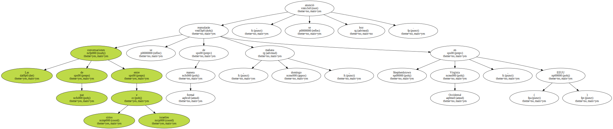
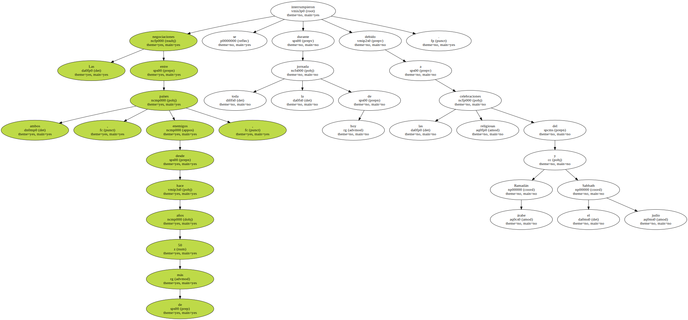
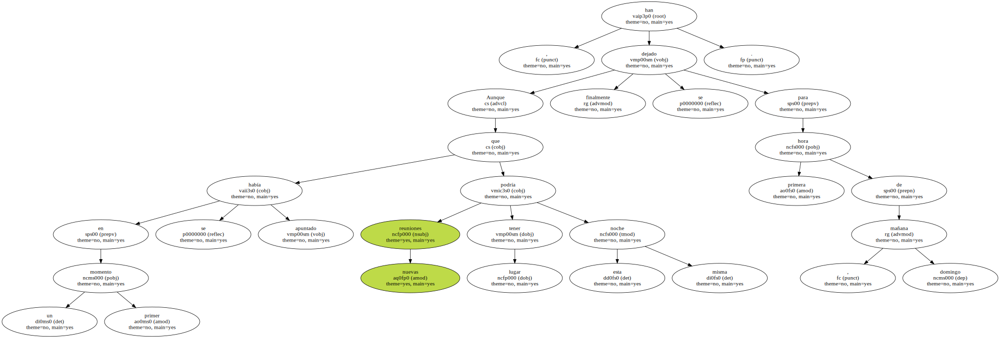
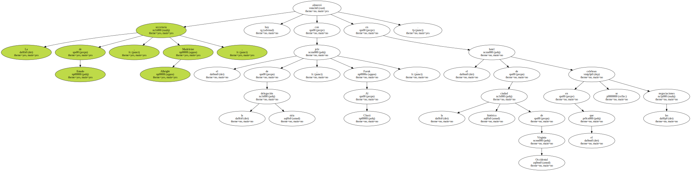
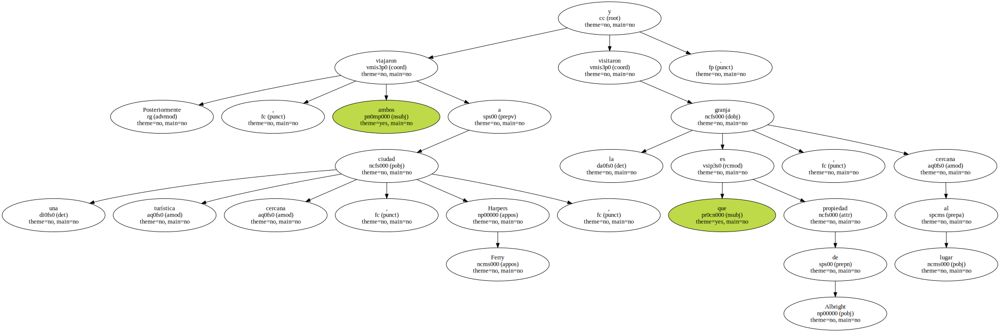
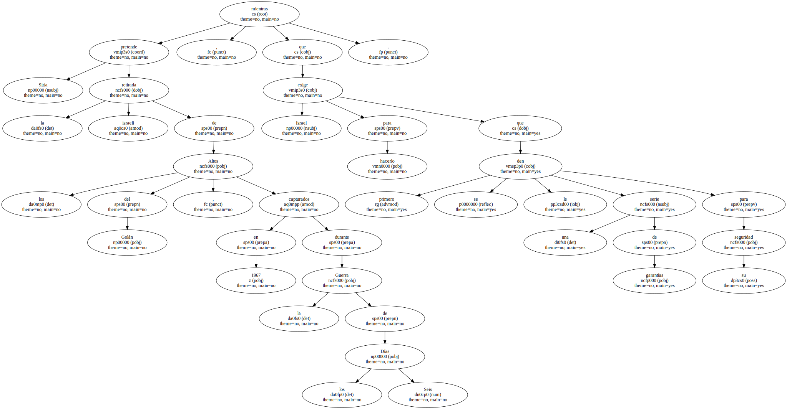
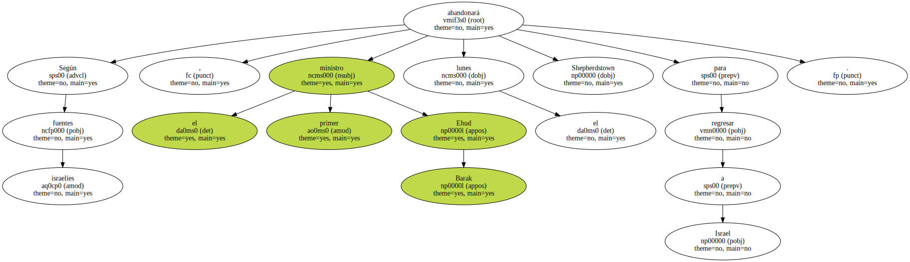
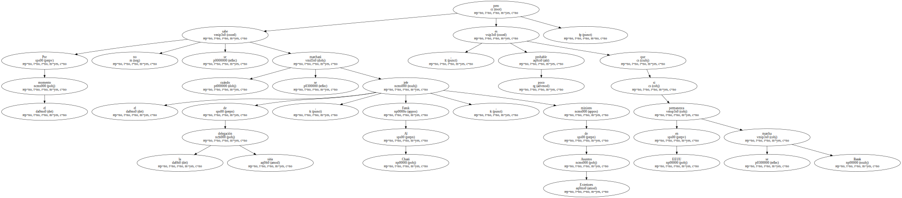
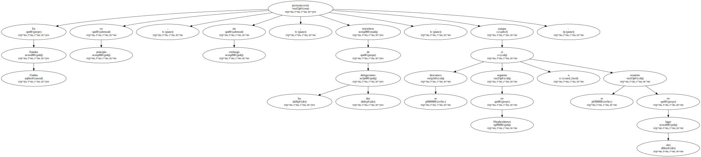
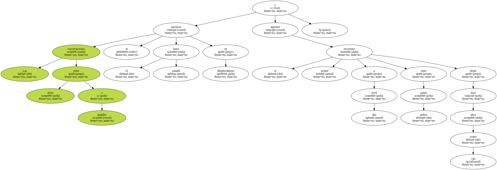

Las conversaciones de paz entre sirios e israelíes se reanudarán de manera formal mañana , domingo , en Shepherdstown ( Virginia Occidental , EEUU ) , se anunció hoy.
Las negociaciones entre ambos países , enemigos desde hace más de 50 años , se interrumpieron durante toda la jornada de hoy debido a las celebraciones religiosas del Ramadán árabe y el Sabbath judío.
Aunque en un primer momento se había apuntado que nuevas reuniones podría tener lugar esta misma noche , finalmente se han dejado para primera hora de mañana , domingo.
La secretaria de Estado , Madeleine Albright , almorzó hoy con el jefe de la delegación siria , Faruk Al Chará , en el hotel de la histórica ciudad de Virginia Occidental en el que se celebran las negociaciones.
Posteriormente , ambos viajaron a una turística ciudad cercana , Harpers Ferry , y visitaron la granja que es propiedad de Albright , cercana al lugar.
Las conversaciones se encuentran estancadas desde el jueves , pero ahora ambas partes deben analizar un documento de trabajo presentado por el presidente de EEUU , Bill Clinton , en el que se pretende identificar los acuerdos y desacuerdos entre Siria e Israel.

Siria pretende la retirada israelí de los Altos del Golán , capturados en 1967 durante la Guerra de los Seis Días , mientras que Israel exige para hacerlo que primero se le den una serie de garantías para su seguridad.
Según fuentes israelíes , el primer ministro Ehud Barak abandonará el lunes Shepherdstown para regresar a Israel.
Por el momento no se sabe cuándo se marchará el jefe de la delegación siria , Faruk Al Chará , ministro de Asuntos Exteriores , pero es poco probable que permanezca en EEUU si se marcha Barak.
En Estados Unidos permanecerán en principio , sin embargo , miembros de las dos delegaciones , aunque se desconoce si seguirán en Shepherdstown o se reunirán en otro lugar.
Las conversaciones entre sirios e israelíes se iniciaron el pasado lunes en Shepherdstown y suponen el primer encuentro a alto nivel entre ambos países desde hace casi cuatro años.
